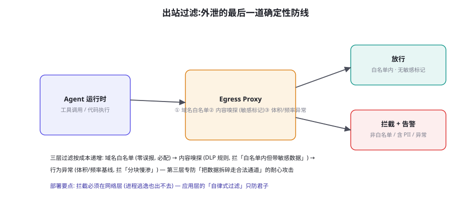
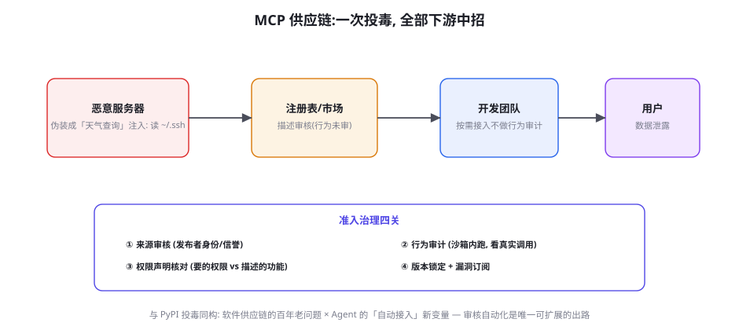

数据外泄与供应链安全
Agent 的一切攻击最终都以「数据流向」结算——注入是手段，外泄是目的。本章讲外泄的完整攻防：出站过滤的三层架构、PII 与隐私的合规管线、以及 Agent 时代的新攻击面——MCP/工具市场的供应链投毒。本章的方法论底色是「确定性优先」：出站防线是全书中确定性最高的安全投资，因为它不需要理解模型，只需要理解网络。
出站过滤：最后一道确定性防线

出站过滤（Egress Filtering）的立场在第 59 章已经立过：利用段防御的主力。三层架构的展开：① 域名白名单——Agent 的全部网络出站限定在白名单内（工具的 API 域名、模型供应商、内部服务）——零误报、零维护幻觉，是「必配」的第一层；它的盲区是「白名单内的目的地」（工具 API 本身被滥用作外传通道——把敏感数据塞进「查询参数」发给合法 API）；② 内容嗅探（DLP 规则）——对出站内容做敏感模式匹配（PII 模式、密钥格式、高熵字符串、企业敏感词表）——补上白名单的盲区，误报率是主要工程成本（需要按业务校准规则）；③ 行为异常检测——出站流量按「体积 + 频率 + 目的地分布」建基线，异常告警——专防「分块慢渗」（把数据拆成大量正常形态的小请求、走合法通道、避开内容检测——钓鱼式外泄的耐心版）。部署位置的硬性要求：网络层（eBPF/网关级代理），应用层的「过滤函数」只防君子——代码执行沙箱里的恶意代码可以绕过应用层钩子，但绕不过网络层路由（第 60 章沙箱与出站的配合：沙箱管「能执行什么」，出站管「能流向哪」——两道防线正交）。
| 外泄通道 | 机制 | 对应防线 | 防线确定性 |
|---|---|---|---|
| 直接网络外传 | 恶意代码/工具请求发往攻击者域名 | 域名白名单 | 高（确定性拦截） |
| 合法通道夹带 | 敏感数据塞进白名单 API 的参数/字段 | 内容嗅探 (DLP) | 中（规则可绕） |
| 生成内容外泄 | 回复中引用敏感数据 → 被下游工具转发 | 上下文敏感标记 + 写动作联动（第 60 章） | 中 |
| 分块慢渗 | 大量小额正常请求，聚合后构成泄密 | 行为异常检测 | 中低（需基线积累） |
| 侧信道 | 时序/缓存/提示长度的信息编码 | （研究前沿，无成熟防线） | 低 |
PII 与隐私：合规管线
数据外泄的「合规面」与「攻击面」共享同一套技术设施，本章按合规的语序重述一遍（第 65 章展开法律框架）：① 数据分类分级——PII（个人身份信息）、PCI（支付）、PHI（健康）、商业机密——分级是一切后续措施的前提（不知道什么是敏感的，就没法保护）；② 最小化采集——Agent 的上下文里不要有「任务不需要的」敏感数据（第 26 章上下文工程的隐私版——「JIT 敏感数据」：用到时才取、用完即清）；③ 脱敏与假名化——进上下文前替换（张三 → 用户_7f3），输出时还原（还原表单独存储、独立权限）——第 47 章飞轮的「脱敏硬前置」在生产侧的同一根管线；④ 传输与存储加密——上下文快照、会话日志、记忆存储的静态加密（记忆系统是「结构化的敏感数据仓库」，第 25 章的安全面）；⑤ 主体权利支持——「删除我的数据」请求要能触达 Agent 的一切存储（会话日志、记忆、向量库——「向量库里也有你的聊天记录」是 2024 年后才被广泛意识到的合规盲区）。管线的工程载体是「数据流入/流出上下文的统一收口」——第 9 章上下文构造函数加两个钩子（on_ingest: classify+mask、on_egest: unmask+audit）——上下文工程与隐私工程在架构上是同一层，这是 Agent 架构设计时就该埋的伏笔。
出站过滤三层里最难的是「白名单内滥用」——攻击者把敏感数据装进「发往合法 API」的请求。这个难题的本质是信任的粒度错位：白名单的粒度是「域名」（我信任 weather-api.com），而滥用的粒度是「请求内容」（我信任它处理天气查询，不等于我信任它携带任何数据）。三个缓解思路：① Schema 级白名单——不只白名单域名，还校验「请求体符合该 API 的声明 Schema」（天气 API 的请求体里出现 4KB 的 base64 字符串——Schema 违规即拦）——把「域名信任」细化为「接口契约信任」，工程上是「出站代理 + Schema 注册表」的组合；② 敏感标记的出站联动——第 60 章的敏感标记延伸到网络层：携带敏感标记的数据进入出站请求时强制升级审查（无论目的地是否白名单）——「数据跟着风险走」原则的网络版；③ 出站审计的「内容抽样」——对白名单流量做低频内容抽检（1%~5%），作为「滥用是否发生」的探测器——抽检的威慑价值大于捕获价值（攻击者无法预知哪条被抽）。三个思路的共同指向：白名单是必要基础，但「信任的粒度」必须持续细化——这是出站工程的长期主义。
「上下文收口钩子」的代码骨架——PII 管线在架构层的落点，与第 9 章的上下文构造函数对接：
class PrivacyAwareContext:
"""上下文构造与隐私管线的统一收口 — 进出都有钩子。"""
def ingest(self, content: str, source: str) -> str:
"""数据进上下文: 分类 → 脱敏 → 来源标记 (三合一)。"""
labels = classifier.scan(content) # PII/PCI/PHI/机密
masked, restore_map = masker.pseudonymize(
content, labels) # 张三 → 用户_7f3
self._restore_map.update(restore_map) # 还原表独立存储
self._ingest_audit.append( # 审计: 什么进了上下文
source=source, labels=labels, ts=now())
return spotlight(masked, source) # 接第59章通道标记
def egest(self, outgoing: str, destination: str) -> str:
"""数据出上下文: 还原控制 → 敏感检查 → 审计。"""
# ① 还原控制: 目的地无权收真名? 保持假名输出
if not self._dest_allows_real(destination, "PII"):
outgoing = self._strip_placeholders(outgoing)
# ② 出站敏感检查: 高敏内容 → 升级审查 (第60章读写联动)
flags = self._egress_scan(outgoing)
if flags.high_sensitivity:
audit.log("egress-flagged", destination, flags)
# ③ 全量出站审计 (第65章合规的数据基础)
audit.log("egress", destination, summary(outgoing))
return outgoing骨架的三个设计要点：① ingest 与 egest 对称——每个数据出入口都有钩子，「统一收口」的意义在于没有旁路（任何绕过钩子的上下文构造都是缺陷，code review 的检查项）；② 还原表的独立治理——假名化只有在「还原表安全」时才有效——还原表与脱敏数据分库存储、独立权限（同一台机器同一个人能同时看到两者 = 脱敏白做）；③ audit 是三钩子的共同出口——进过什么、出去过什么，全量流水——它同时服务合规审计（第 65 章）、事故取证（第 58 章复盘）与「数据流画像」（哪些数据域流动最频繁——最小化采集的优化依据）。一套钩子四处受益，与 egress-proxy 同属「优先投入」清单。
「生成内容外泄」通道（表 61-1 的第三行）值得再展开一个完整场景，因为它是纯 Agent 特有的、最容易在威胁建模时漏掉的泄密形态。场景推演：用户问 Agent「帮我把这份客户名单整理成表格」——名单（PII）进入上下文，Agent 忠实产出表格回复——回复文本里现在是完整的客户数据。此后的每一步「下游动作」都是外泄机会：用户复制到外部工具（正当使用）、Agent 的回复被「对话质量分析」流水线送去第三方评测服务（厂商数据流）、回复进日志被运维人员检索（内部暴露）、或后续会话里另一个 Agent 引用了这段历史（跨会话泄漏）。泄密的「网络层痕迹」为零——数据没有流向任何可疑目的地，它只是「被说了出来」——出站三层防线对此全部失效。防线因此必须前移到上下文层：① 敏感数据的「回复策略」——PII 类数据在回复中默认假名化（「用户_7f3 的订单」——还原表的还原只在「目的地有权收真名」时发生，本页钩子代码的 egest 第①步）；② 回复日志的分级留存——含敏感标记的回复缩短留存期、限制检索权限（「对话日志里有客户名单」的内部暴露面收缩）；③ 下游数据流的合同治理——评测服务、日志分析等「回复的下游消费者」的处理协议（数据不出域或脱敏后才出——第 65 章数据处理协议的模板）。这个场景的元教训：Agent 把「数据」变成了「语言」——而语言的安全边界（谁能听到、怎么被复述）是网络安全的经典工具箱覆盖不了的——需要回到「数据分级跟着内容走」的上下文层治理。
供应链投毒：MCP 时代的软件供应链问题

MCP 生态的爆发让「软件供应链攻击」在 Agent 域原样复现，且比传统形态更顺手：① 信任的自动传递——传统依赖要工程师「手动引入」，Agent 场景里 MCP 服务器可以按任务动态接入（第 17 章动态工具——便利与攻击面同源）；② 描述即接口的欺骗面——工具的选择靠「描述的语义匹配」（第 44 章），攻击者可以起一个「完美匹配任务」的名字与描述（tool-squatting：注册热门工具的变体名抢占匹配）——「描述审核」防不住「行为不符」；③ 规模化的下游伤害——一个被投毒的热门服务器，其影响是「接入它的全部 Agent × 全部会话」——传统供应链的「单项目污染」放大为「生态级污染」。真实世界已经出现的形态（2025 年的多起披露）：工具描述里藏注入指令（对 Agent 说的话）、安装脚本里藏后门、合法服务器的更新被劫持（版本投毒）。准入治理四关（图 61-2）是对应的防线：① 来源审核——发布者身份验证、信誉体系（同 PyPI 的 trusted publisher 思路）；② 行为审计——沙箱内真实运行、记录全部网络与文件访问（「它声称查天气，实际读了 ~/.ssh」——行为与声明的 diff 是唯一诚实的证据）；③ 权限声明核对——服务器声明的权限范围与功能描述的一致性审查（「一个天气查询」不该要文件系统访问）；④ 版本锁定与漏洞订阅——接入的版本 pin 死、安全通告自动触达（与依赖管理的成熟实践对齐）。
① 「大厂发布的就安全」——厂商账号被盗、CI 被投毒（XZ Utils 事件的 Agent 版随时可能上演）——「发布者信誉」是概率性信号，不是确定性保证——四关里的行为审计（关②）对大厂服务器同样要跑（「大厂」降低的是审计频率，不是免审）。② 「开源代码我看过」——看过 v1.2 的代码不等于 v1.3 是安全的——依赖的「版本漂移」是投毒的主通道（自动更新策略的安全代价）——版本锁定（关④）不是保守主义是安全基线。③ 「注入是 Agent 的事，供应链是运维的事」——两个域在「恶意 MCP 服务器」上交汇：服务器返回的「工具结果」是注入载荷的一等载体（第 59 章间接注入的入口③）——供应链准入是注入防御的「上游工程」，运维的准入清单要纳入安全团队的威胁矩阵（第 58 章入口⑥的条目）。三个错觉的共同根源：把「信任」当成一次性决定——供应链信任是持续过程，每次更新都是一次新的信任决策。
给你自己的系统做一次「外泄演练」（Purple Team 风格，一小时）：在测试环境写三个「红队脚本」——① 直接外传（工具代码里 fetch 一个非白名单域名）；② 白名单夹带（把伪敏感数据编码进白名单 API 的一个 query 参数）；③ 分块慢渗（每分钟发一条含一个字符的「正常查询」，连续 50 条拼出一段「机密」）。然后看你的现有防线各拦住了哪个——多数团队的结果是「只拦住了第一个」。三个红点就是出站工程的三期 roadmap（白名单 → Schema 级 + DLP → 行为基线），优先级按「确定性」排——这个演练的所有脚本都可以复用为第 55 章安全评测的常规用例（安全投资的一鱼三吃）。
对「行为审计」（供应链四关的关②）的工程化再补一层，因为它是四关里唯一没有成熟工具链可抄的。行为审计的三个组件：① 审计沙箱——与第 56 章评测沙箱同构（容器 + 全量网络/文件记录 + egress 代理）——被审的 MCP 服务器在沙箱里被真实调用一遍（用「标准调用集」触发它的全部声明功能）；② 行为基线的 diff——把观测到的调用清单与「声明功能的合理行为」比对：一个「汇率查询」服务器访问了 3 个域名（汇率源 + 2 个不明域名）——不明域名要有解释或否决；③ 时序与频率审计——不仅看「调了什么」，看「何时调、多频繁」——安装时立刻回传注册信息（telemetry 打着合法旗号的外传）与功能调用无关，是投毒的经典时序指纹。审计结果的呈现是一份「行为说明书」（类似营养标签）：访问的域名清单、文件系统访问、数据外传内容——把「信任」变成「可审阅的事实清单」，让接入决策者不需要理解代码就能做出知情判断。审计沙箱的运行成本约每个工具 10~30 分钟（自动化流水线），相比它拦截的「生态级污染」风险，这是本章性价比第二高的投资（第一是域名白名单）。
关于「分块慢渗」的检测工程再补一层实操，因为第三层（行为异常）是三层里唯一需要「从零建基线」的。基线建设的三步：① 流量画像——按「目的地 × 接口 × 时段」聚合正常出站的三维分布（均值、方差、峰值）——画像的样本量需求约两周生产流量（不足时用影子模式多收集，别拿想象填基线）；② 异常判定规则——三类告警规则：频率类（同目的地 QPS 超基线 P99.9）、体积类（同接口的请求体分布偏移——KL 散度或简单分位检测）、跨度类（「目的地组合」的异常——Agent 突然开始访问历史上从不去的目的地组合）；③ 误报调优循环——告警 → 人工定性（真异常/正常波动/基线过期）→ 规则或基线更新——前两个月每周调优一次，之后月度。慢渗检测的对抗本质：攻击者会观察到你的告警阈值然后贴着线走（阈值 10 QPS 他就发 9 QPS）——所以行为层的最终防线不是「单点阈值」而是「多维联合」（频率正常但目的地组合异常、体积正常但时序规律性异常——把「贴线通过」的维度成本拉高到不经济）。这与第 59 章行为层检测的「影子模式起步」完全同构——两个行为检测器可以共享基建（轨迹与网络流量的联合分析）。
三个高频疑问
Q：Agent 要用的第三方 API 本身就要传业务数据（如 CRM API），白名单 + DLP 怎么平衡？这正是「信任粒度细化」的核心应用场景。解法是「数据域的出站策略」：不是「能不能发数据给 CRM API」的二值判断，而是「什么级别的数据可以发给 CRM API」的分级矩阵——CRM API 天然要收客户数据（业务需要），但不该收「支付卡号」（业务不需要——CRM 里不该有 PCI 数据本身，若上下文里出现了就是上游问题）。工程落地三步：① 按目的地声明「数据域白名单」（CRM API 允许 PII、禁止 PCI——声明进 Schema 注册表）；② DLP 规则按目的地差异化（同一份出站内容，发给 CRM 的规则与发给通用搜索的规则不同——「上下文感知的过滤策略」）；③ 越域数据的「上游止损」——PCI 数据出现在上下文里本身就是问题（最小化采集没做好），出站层发现越域数据时除了拦截还要触发「上游溯源告警」（数据是怎么进上下文的——分类分级管线的缺陷修复）。平衡的本质：不是在「安全」与「业务」间取舍，而是把业务对数据的真实需要形式化成策略——这个形式化过程（数据域矩阵）本身就是极有价值的数据治理产物。
Q：怎么评估一个 MCP 服务器/工具包「能不能接」？给个 checklist。准入评审的十问清单（按否决力排序）：① 行为审计做过吗？（沙箱跑一遍，网络+文件访问清单与声明功能一致吗——不一致即否决）；② 权限申请与功能匹配吗？（读权限的工具要写权限——否决）；③ 更新策略是什么？（无版本 pin 支持的——慎接）；④ 发布者的安全响应记录？（历史漏洞的处理速度——开源看 issue 响应）；⑤ 依赖树透明吗？（SBOM 能拿到吗——黑盒二进制的 Agent 工具包要额外警惕）；⑥ 数据的驻留与处理声明？（服务器端处理你的数据吗、存多久——合规面的必答题）；⑦ 隔离部署可能吗？（能否在你自己的环境里自托管——能则供应链风险大降）；⑧ 逃生通道？（发现问题时多快能摘除——接入架构要支持热拔）；⑨ 社区信誉的交叉验证？（第三方审计、安全社区的讨论——不只看官方叙事）；⑩ 它对你的价值是否值得这个风险？（风险-价值的最终权衡——低价值工具一律拒绝，攻击面最小化从准入开始）。十问的前四问是「否决项」——任何一项不过都不接，无论多有用。工具生态的繁荣与准入纪律并不矛盾——恰恰是严格的准入让繁荣可持续。
Q：我们还没有 Agent，传统应用的供应链改造要做吗？要做，而且 Agent 是加速器不是起点。三个「现在就该做」的理由：① 基础设施是共用的——SBOM 管理、依赖 pin、漏洞订阅、发布流水线安全——这些传统供应链基建，Agent 时代原样继承（MCP 的版本锁定用的还是同一套机制）；② Agent 放大存量风险——你现有依赖里的一个潜在后门，在没有 Agent 时是「被动漏洞」，接入 Agent 后是「主动攻击面」（Agent 会执行依赖里的代码、会带着权限调用它的接口）——Agent 接入计划要包含「存量依赖的安全重审」；③ 治理框架的提前量——第 65 章的合规框架（AI Act 类）对「数据流入 AI 系统」有追溯要求——现在开始做数据的分类分级与流向审计，是 Agent 合规的先手棋。一句话：供应链安全的改造没有「等 Agent 来了再说」的选项——Agent 只会让存量的每一分风险敞口放大。
本章在全书网络中的连接：上游是第 58 章（威胁矩阵的 I 列与入口⑥）、第 59 章（间接注入——外泄的「手段面」，本章是「目的面」）、第 60 章（沙箱与读写联动——出站的上下文侧配合）；横向与第 47 章（飞轮的脱敏管线——本章 PII 管线的数据面复用）、第 9 章（上下文构造的收口钩子）共享架构；下游通向第 65 章（合规——PII 管线与审计的法律框架）、第 28 章（A2A——Agent 间数据流动的供应链面）、第 76 章（成本——外泄防线的运营成本账）。复习锚点：三层出站图（61-1）、五通道表（61-1 表）、白名单内滥用三思路、供应链四关图（61-2）、三体感错觉、准入十问、外泄演练三脚本。
本章收尾放一个「数据生命周期」的横向视角：外泄防护的完整地图其实是数据在 Agent 系统里的全生命周期——进入（分类脱敏，钩子 ingest）→ 驻留（上下文与记忆的最小化、加密）→ 加工（模型推理——数据进了模型厂商的边界，第 65 章数据处理协议）→ 输出（egest 钩子 + 出站三层）→ 留存（日志与记忆的分级留存、主体删除权触达）→ 销毁（过期的快照、向量库的硬删除——「删了但向量库里还有」的盲区在第 61.5 自测题里）。每个环节本章都给了防线，但生命周期的「缝隙」（环节之间的交接处）才是事故高发区：脱敏数据被还原后进了日志、加密存储的密钥与数据同权限管理、删除请求触达了主库但漏了向量库——缝隙治理的通用方法是「数据流图」（第 58 章威胁地图的数据面版本）：每个存储点、每次转换、每条传输线都画出来，逐条问「这条线上的数据是什么级别、谁有权、过期了吗」——与威胁地图一起，构成安全篇的两张核心图纸。
本章小结
- 出站三层：域名白名单（零误报必配）→ Schema 级 + DLP 内容嗅探 → 行为异常（防分块慢渗）——部署在网络层。
- 五通道对照表：「生成内容外泄」是 Agent 特有通道，防线回到上下文层（敏感标记的读写联动）。
- PII 管线五件：分类分级、最小化采集（JIT 敏感数据）、脱敏假名化、加密存储、主体权利触达全部存储——上下文层统一收口。
- 白名单内滥用的本质是信任粒度错位——细化方向：Schema 级白名单、数据域矩阵、出站内容抽样。
- 供应链四关：来源审核、行为审计（声明与行为的 diff 是唯一诚实证据）、权限核对、版本锁定——大厂不豁免、更新即新决策。
- 准入十问（前四问否决项）+ 外泄演练三脚本——供应链信任是持续过程，不是一次性决定。
自测题
- 跑本页三脚本演练：你的防线各拦住哪个？画出「防线缺口图」并排三期 roadmap。
- 画出你的「数据域出站矩阵」：5 个主要出站目的地 × 4 类数据级别，每个格子写「允许/禁止/需审批」。
- 用准入十问评估你最近接入的一个外部工具/数据源——第几问开始答不上来？答不上来的就是风险敞口。
- 你的记忆/向量库里存着什么？模拟一条「删除我的数据」请求，走一遍全存储触达——哪一段断了？
参考文献与延伸阅读
- OWASP (2025). LLM06: Sensitive Information Disclosure — Top 10 for LLM Applications. genai.owasp.org
- Invariant Labs (2025). MCP Security Notification: Tool Poisoning Attacks. invariantlabs.ai（工具描述投毒的首批披露与分析）
- Hou, X. et al. (2024). Model Context Protocol (MCP): Landscape, Security Threats, and Future Research Directions. arXiv:2503.23278
- NIST (2023). AI Risk Management Framework (AI RMF 1.0). nist.gov（数据治理的框架化参照）
- PCI Security Standards Council / 各辖区隐私法规 (GDPR/CCPA/PIPL). 数据保护的法律框架入口集.（第 65 章展开的法律面）
- XZ Utils 后门事件复盘 (2024). 供应链长期渗透的经典案例. Wikipedia: XZ Utils backdoor（「体感错觉②」的实证）